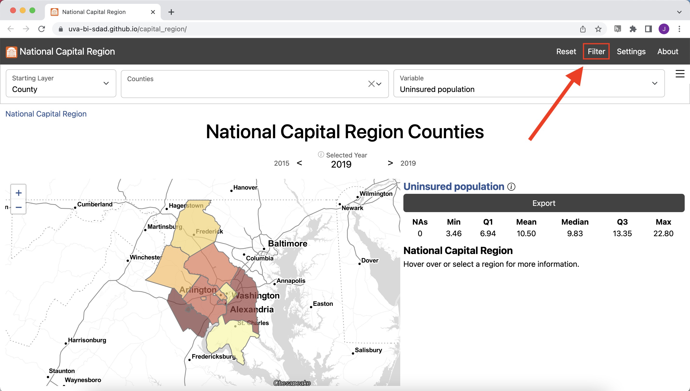
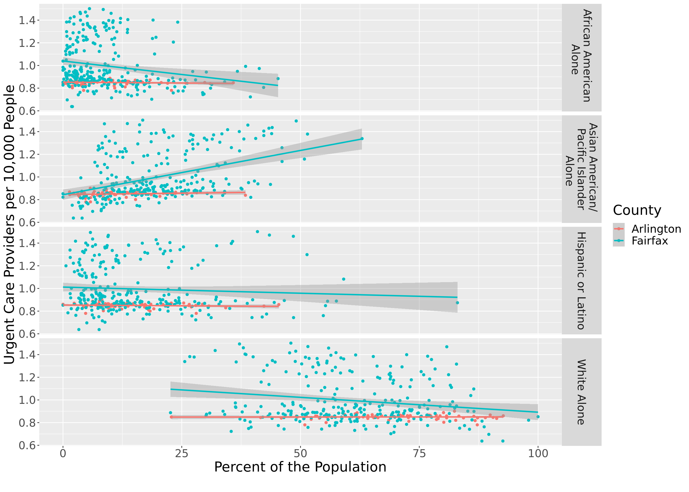

Health Equity in the National Capital Region
Is access to urgent care centers equitable in Arlington and Fairfax County?
Our partners in Arlington and Fairfax Counties were interested in understanding the equity of access to health services by neighborhood, by race, by household income, and by housing type. We began analyzing access to urgent care facilities.
We inventoried a variety of urgent care location data sources for accuracy and quality. Given that urgent care is a rapidly growing health care service, we found that administrative datasets were incomplete by a wide margin. We found that Google Maps provided the most complete picture of urgent care facility locations in the Capital Region. To get a better understanding of the idea of access, we compared several measures.
Explore this measure on our dashboard
Steps to replicate this map
- Click “Filter” in the top left navigation bar to open the Filter Window 
- In the Filter Window under “county” select “Arlington County” and “Fairfax County”
- Exit the Filter Window
-
In the Starting Layer Menu, Select “Tract”

- In the Settings Menu, scroll down to Map Options
-
Input “2” for Outline Weight and “3” for Background Outline Weight

- Exit the Settings Menu
-
In the Variable Menu, select Urgent care geographic (count) under Health

-
Click Export to open the Export Window and select Download to download the data locally

There are 113 urgent care facilities in Fairfax and 18 facilities in Arlington.By number of facilities, Fairfax has the greatest access to urgent care in the National Capital region. We calculated access to urgent care by count, or presence of an urgent care in a given geography. For most census tracts, there is no urgent care present. Fairfax and Arlington residents who live in a census tract without an urgent care may be able to easily drive to one nearby, though.

Drive times calculated using Open Source Routing Machine.
Explore this measure on our dashboard
Steps to replicate this map
- Click “Filter” in the top left navigation bar to open the Filter Window
- In the Filter Window under “county” select “Arlington County” and “Fairfax County”
- Exit the Filter Window
-
In the Starting Layer Menu, Select “Tract”
-
In the Settings Menu under Summary Level select “Selected Super-Region”

-
Scroll down to Map Options and input “2” for Outline Weight and “3” for Background Outline Weight
- Exit the Settings Menu
-
In the Variable Menu, select Urgent care availability (drive time) under Health

-
Click Export to open the Export Window and select Download to download the data locally
{kind=link}
Fairfax and Arlington residents who live in more urban areas, along major roads, or in Metro corridors, have greater access to urgent cares by drive time.In Fairfax, the highest average drive time to the ten closest urgent cares is over 15 minutes, while the lowest is three minutes. Across Arlington, it can take as much as nine minutes to drive to the closest urgent care and and as little two minutes. In both these counties, geographic inequities exist in access to urgent care. Our measure of access, though, still does not take into account any population-level information.

Population data from the American Community Survey (ACS).
Drive times calculated using Open Source Routing Machine.
Explore this measure on our dashboard
Steps to replicate this map
- Click “Filter” in the top left navigation bar to open the Filter Window
- In the Filter Window under “County” select “Arlington County” and “Fairfax County”
- Exit the Filter Window
-
In the Starting Layer Menu, Select “Tract”
-
In the Settings Menu under Summary Level select “Selected Super-Region”
-
Scroll down to Map Options and input “2” for Outline Weight and “3” for Background Outline Weight

- Exit the Settings Menu
-
In the Variable Menu, select Urgent care geographic availability under Health

-
In the Settings Menu, toggle Color by Rank on

-
Click Export to open the Export Window and select Download to download the data locally
In Fairfax the areas with the lowest access to urgent cares are the southwestern neighborhoods, including Fort Hunt and Huntington, and northern McLean.
In Arlington, northern neighborhoods near Marymount University and southern neighbhorhoods below Columbia Pike have the lowest access.These areas have relatively high populations given the proximity of urgent cares. The area with the greatest access is Centreville, Chantilly, and Herndon, which lie along a major roads in western Fairfax and have a relatively high number of urgent cares for the population. Bailey’s Crossroads and Annandale also have comparatively low access for the region.
Population data from the American Community Survey (ACS).
Drive times calculated using Open Source Routing Machine.
Explore this measure on our dashboard
Steps to replicate this map
- Click “Filter” in the top left navigation bar to open the Filter Window
- In the Filter Window under “county” select “Arlington County” and “Fairfax County”
- Exit the Filter Window
-
In the Starting Layer Menu, Select “Tract”
-
In the Settings Menu under Summary Level select “Selected Super-Region”
-
Scroll down to Map Options and input “2” for Outline Weight and “3” for Background Outline Weight
- Exit the Settings Menu
-
In the Variable Menu, select Urgent care geographic availability under Health
-
In the Settings Menu, toggle Color by Rank on
- In the Filter Window, select Add Variable Condition
- Scroll down to select Median household income
-
Input “Selected” for Component, “<=” for Operator, and Q1 for Value

-
Click Export to open the Export Window and select Download to download the data locally
Many census tracts, such as those in southern Arlington, Annandale, Bailey’s Crossroads, and near Fort Hunt, have both a relatively low median household income and a relatively low access to urgent care.

Explore these measures on our dashboard
Steps to replicate this map
- Click “Filter” in the top left navigation bar to open the Filter Window
- In the Filter Window under “county” select “Arlington County” and “Fairfax County”
- Exit the Filter Window
-
In the Starting Layer Menu, Select “Tract”
-
In the Settings Menu under Summary Level select “Selected Super-Region”
-
Scroll down to Map Options and input “2” for Outline Weight and “3” for Background Outline Weight
- Exit the Settings Menu
- In the Variable Menu, select Asian American/Pacific Islander population under Demographics
- In the Variable Menu, select Black population under Demographics
- In the Variable Menu, select Hispanic/Latino population under Demographics
- In the Variable Menu, select White population under Demographics
-
Click Export to open the Export Window and select Download to download the data locally
After developing a comprehensive measure of access, we began to dig into the question of equity of access to urgent care facilities by demographics. We observed that the neighborhoods affected by low access to urgent cares have different demographic compositions.
Northern Arlington, where the population is largely white and high income on average, has some of the lowest access to urgent cares in the region.
The Southern Arlington and neighboring Bailey’s Crossroads and Annandale in Fairfax have higher Hispanic/Latino populations and lower income on average. These areas also have relatively low access to urgent cares. Bailey’s Crossroads is also characterized by a high Latino population and lower average household income.
Centreville, McLean, and Tyson’s Corner have larger Asian American/Pacific Islander populations. Centreville has some of the highest access to urgent care in the region while McLean has some of the lowest access.
Some census tracts in Huntington and Fort Hunt have higher than average Black populations and lower than average household income. These areas are also the most underserved in access to urgent care.
In addition to income and demographic variables, we could explore access to urgent care by additional factors affecting health equity, including primary language spoken at home or access to health insurance.
Having a comprehensive knowledge of the equity of access to urgent care within neighborhoods in Fairfax and Arlington counties empowers our local stakeholders to make more effective policy decisions to address and correct inequities.Using the Social Impact Data Commons, we can explore access to additional health services using an equity lens. For example, we can explore differences in access to hospitals, primary care physicians, or substance use facilities. We find that access to these services across Fairfax and Arlington do not necessarily follow the same pattern. Using specific measures, policymakers can make informed decisions to address specific health equity gaps.
Performing statistical analyses
R example
Using R statistical software, we can perform statistical analyses to analyze the relationships between variables.
#
# retrieve
#
# define the set of variable we want to retrieve
variables <- c(
"perc_hispanic_or_latino", "perc_afr_amer_alone",
"perc_AAPI", "perc_wht_alone", "urgent_3sfca"
)
# use them to make an API URL
url <- paste0(
"https://ncr-data-commons.netlify.app/api?", # base URL of the API
"id=51013,51059&dataset=tract&time_range=2020,2022&include=", # query string defining a subset
paste(variables, collapse = ",") # comma-separate version of the selected variables
)
# download and load the data directly
data <- read.csv(url)
#
# prepare
#
# since urgent care is only available in 2022, but demographics variables are only available
# up to 2020, we'll need to align time by moving urgent care to 2020
## first set urgent care in 2020 to that in 2022
data$urgent_3sfca[data$time == 2020] <- data$urgent_3sfca[data$time == 2022]
## then remove all but 2020 time points from the dataset
data <- data[data$time == 2020,]
# since we're interested in comparing counties, but looking at the tract level,
# we can add a variable for county, identified by the first 5 characters of the tract GEOID
data$county <- substring(data$ID, 1, 5)
# for plotting, we'll make a tall version of the dataset (to plot multiple variables at once),
# assign display-ready labels, and remove missing values (likely tracts with no people)
data_tall <- na.omit(data.frame(
Value = unlist(data[, variables[1:4]]),
variable = c(
perc_AAPI = "Asian American/ \n Pacific Islander \n Alone",
perc_hispanic_or_latino = "Hispanic or Latino",
perc_afr_amer_alone = "African American \n Alone",
perc_wht_alone = "White Alone"
)[rep(variables[1:4], each = nrow(data))],
urgent_3sfca = rep(data$urgent_3sfca, 4),
County = c("51013" = "Arlington", "51059" = "Fairfax")[rep(data$county, 4)]
))
#
# analyze
#
# now we can look at the relationships between urgent care
# and each demographic variable within tracts, between counties
library(ggplot2)
ggplot(data_tall) +
aes(x = Value, y = urgent_3sfca, color = County) +
geom_point() +
geom_smooth(method = lm, formula = y ~ x) +
labs(
y = "Urgent Care Providers per 10,000 People",
x = "Percent of the Population",
caption = ""
) +
facet_grid(variable ~ .) +
theme(text = element_text(size = 20))
Python example
#!/usr/bin/env python
# coding: utf-8
import requests
import pandas as pd
import io
import matplotlib.pyplot as plt
import seaborn as sns
import numpy as np
from plotnine import (ggplot,aes,geom_point,geom_smooth,labs,facet_grid)
variables = [
"perc_hispanic_or_latino", "perc_afr_amer_alone",
"perc_AAPI", "perc_wht_alone", "urgent_3sfca"
]
url = f"https://ncr-data-commons.netlify.app/api?id=51013,51059&dataset=tract&time_range=2020,2022&include={','.join(variables)}"
response = requests.get(url)
data = pd.read_csv(io.StringIO(response.text))
data## ID Name ... perc_AAPI urgent_3sfca
## 0 51013100100 51013100100 ... 9.136421 NaN
## 1 51013100100 51013100100 ... NaN NaN
## 2 51013100100 51013100100 ... NaN 0.888562
## 3 51013100200 51013100200 ... 4.475628 NaN
## 4 51013100200 51013100200 ... NaN NaN
## ... ... ... ... ... ...
## 1096 51059980200 51059980200 ... NaN NaN
## 1097 51059980200 51059980200 ... NaN 1.410147
## 1098 51059980300 51059980300 ... NaN NaN
## 1099 51059980300 51059980300 ... NaN NaN
## 1100 51059980300 51059980300 ... NaN 0.771739
##
## [1101 rows x 8 columns]data['urgent_3sfca'].loc[data['time'] == 2020] = data['urgent_3sfca'].loc[data['time'] == 2022].values## /home/js2mr/.local/lib/python3.6/site-packages/pandas/core/indexing.py:670: SettingWithCopyWarning:
## A value is trying to be set on a copy of a slice from a DataFrame
##
## See the caveats in the documentation: https://pandas.pydata.org/pandas-docs/stable/user_guide/indexing.html#returning-a-view-versus-a-copy## /home/js2mr/.local/share/r-miniconda/envs/r-reticulate/bin/python:1: SettingWithCopyWarning:
## A value is trying to be set on a copy of a slice from a DataFrame.
## Try using .loc[row_indexer,col_indexer] = value instead
##
## See the caveats in the documentation: https://pandas.pydata.org/pandas-docs/stable/user_guide/indexing.html#returning-a-view-versus-a-copy## ID Name time ... perc_AAPI urgent_3sfca county
## 0 51013100100 51013100100 2020 ... 9.136421 0.888562 51013
## 3 51013100200 51013100200 2020 ... 4.475628 0.845982 51013
## 6 51013100300 51013100300 2020 ... 9.681281 0.803067 51013
## 9 51013100400 51013100400 2020 ... 5.779205 0.780418 51013
## 12 51013100500 51013100500 2020 ... 3.424351 0.827450 51013
## ... ... ... ... ... ... ... ...
## 1086 51059492400 51059492400 2020 ... 15.318452 0.836113 51059
## 1089 51059492500 51059492500 2020 ... 7.234383 1.096726 51059
## 1092 51059980100 51059980100 2020 ... 0.000000 0.852133 51059
## 1095 51059980200 51059980200 2020 ... NaN 1.410147 51059
## 1098 51059980300 51059980300 2020 ... NaN 0.771739 51059
##
## [367 rows x 9 columns]## ID int64
## Name int64
## time int64
## perc_hispanic_or_latino float64
## perc_wht_alone float64
## perc_afr_amer_alone float64
## perc_AAPI float64
## urgent_3sfca float64
## county object
## dtype: object## array(['51013', '51059'], dtype=object)## ID Name time ... perc_AAPI urgent_3sfca county
## 240 51059415100 51059415100 2020 ... 4.972222 0.774041 51059
## 243 51059415200 51059415200 2020 ... 1.945003 0.750811 51059
## 246 51059415300 51059415300 2020 ... 4.124748 0.742511 51059
## 249 51059415401 51059415401 2020 ... 4.062244 0.742759 51059
## 252 51059415402 51059415402 2020 ... 8.604816 0.731398 51059
##
## [5 rows x 9 columns]## ID Name time ... perc_AAPI urgent_3sfca county
## 0 51013100100 51013100100 2020 ... 9.136421 0.888562 51013
## 3 51013100200 51013100200 2020 ... 4.475628 0.845982 51013
## 6 51013100300 51013100300 2020 ... 9.681281 0.803067 51013
## 9 51013100400 51013100400 2020 ... 5.779205 0.780418 51013
## 12 51013100500 51013100500 2020 ... 3.424351 0.827450 51013
##
## [5 rows x 9 columns]dt={}
dt_vars=vars_ = {"perc_hispanic_or_latino":"Hispanic or Latino", "perc_afr_amer_alone":"African American",
"perc_AAPI":"Asian American", "perc_wht_alone":"White Alone"}
vars_ = ["perc_hispanic_or_latino", "perc_afr_amer_alone","perc_AAPI", "perc_wht_alone"]
dt['variable']=[]
dt['value']=[]
dt['urgent_3sfca']=[]
for v_ in vars_:
dt['value']+=list(data1[v_])
dt['urgent_3sfca']+=list(data1['urgent_3sfca'])
dt['variable']+=([dt_vars[v_]]*len(list(data1[v_])))
dt['County']=['51059']*len(dt['value'])
df1=pd.DataFrame(dt)
df1.head()## variable value urgent_3sfca County
## 0 Hispanic or Latino 13.555556 0.774041 51059
## 1 Hispanic or Latino 7.545272 0.750811 51059
## 2 Hispanic or Latino 31.187123 0.742511 51059
## 3 Hispanic or Latino 48.533989 0.742759 51059
## 4 Hispanic or Latino 16.855524 0.731398 51059dt1={}
dt_vars=vars_ = {"perc_hispanic_or_latino":"Hispanic or Latino", "perc_afr_amer_alone":"African American",
"perc_AAPI":"Asian American", "perc_wht_alone":"White Alone"}
vars_ = ["perc_hispanic_or_latino", "perc_afr_amer_alone","perc_AAPI", "perc_wht_alone"]
dt1['variable']=[]
dt1['value']=[]
dt1['urgent_3sfca']=[]
for v_ in vars_:
dt1['value']+=list(data2[v_])
dt1['urgent_3sfca']+=list(data2['urgent_3sfca'])
dt1['variable']+=([dt_vars[v_]]*len(list(data2[v_])))
dt1['County']=['51013']*len(dt1['value'])
df2=pd.DataFrame(dt1)
df2.head()## variable value urgent_3sfca County
## 0 Hispanic or Latino 7.670302 0.888562 51013
## 1 Hispanic or Latino 5.878877 0.845982 51013
## 2 Hispanic or Latino 8.499177 0.803067 51013
## 3 Hispanic or Latino 4.766609 0.780418 51013
## 4 Hispanic or Latino 9.579230 0.827450 51013## variable value urgent_3sfca County
## 0 Hispanic or Latino 13.555556 0.774041 51059
## 1 Hispanic or Latino 7.545272 0.750811 51059
## 2 Hispanic or Latino 31.187123 0.742511 51059
## 3 Hispanic or Latino 48.533989 0.742759 51059
## 4 Hispanic or Latino 16.855524 0.731398 51059## array(['51059', '51013'], dtype=object)df = df.dropna()
# Rivanna is not letting us knit plots
from plotnine import ggplot, aes, facet_grid, geom_point, geom_smooth, labs, scale_color_discrete
#(
# ggplot(df, aes(x='value', y='urgent_3sfca', color='County')) +
# facet_grid(facets="variable ~ .") +
# geom_point() +
# geom_smooth() +
# labs(x='Percent of the Population', y='Urgent Care Providers per 10,000 People') +
# scale_color_discrete(labels={'51013': 'Arlington', '51059': 'Fairfax'})
#)We see that urgent care access is variable across census tracts in Arlington county, there does not appear to be a relationship between urgent care access demographics. In Fairfax County, census tracts with higher percentages of Asian American/Pacific Islander population appear to have higher access to urgent care, too. Additionally, census tracts with higher percentages of Black and White populations appear to have lower access to urgent cares.
Note: If you find that the Social Impact Data Commons isn’t displaying data properly, you may need to clear the dashboard settings (from the Settings Menu) or clear your browser cache. Please contact us if you have other issues.
| Sponsored by |
| Project Contact: Aaron Schroeder, ads7fg@virginia.edu |